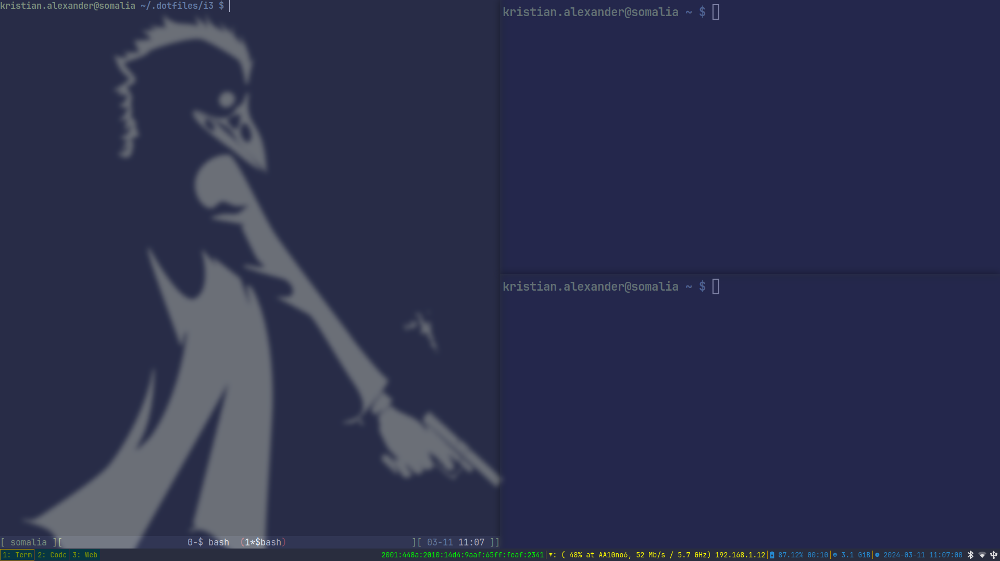

i3wm Configuration Files
Table of Contents
About
This is my personal i3wm configuration. The actual code itself is inside this one org-mode file that can be tangled from inside Emacs with the command org-babel-tangle-file. I'm using Gnu Stow to create symlinks from the files tangled in this org file into my home directory since not all the files in this repository needs to be symlinked1.

{kind=link}
i3wm
The i3-wm package that I used is from the default repository in archlinux.
variables
Mostly these variables are set to avoid repetion.
- mod key
Mod4is theSuperkey, orWinkey for the rest of the world.Mod1isAlt2. You don't have to set this variable, but by using variable, we can change the mod key without having to change each individual lines of keybindings.1: set $mod Mod4 - notify
I used dunst as a desktop notification, though there's many other packages that can replace it. I prefer dunst because it's easier to configure.
1: set $notify exec notify-send -t 1000 - refresh i3status
The preferred status bar for i3, I like the simplicity of i3status.
1: set $refresh_i3status killall -SIGUSR1 i3status - navigation keys
I use vim keys obviously.
1: set $up k 2: set $down j 3: set $left h 4: set $right l
- workspaces
I tried to have a uniformed workspaces across all my window manager configurations. Some
1: set $ws1 "1: Term" 2: set $ws2 "2: Code" 3: set $ws3 "3: Web" 4: set $ws4 "4: Mail" 5: set $ws5 "5: File" 6: set $ws6 "6: Office" 7: set $ws7 "7: Games" 8: set $ws8 "8: Remote" 9: set $ws9 "9: Torrent" 10: set $ws10 "10: Chat"
Set
=workspace_back_and_forth1: workspace_auto_back_and_forth yes - applications
1: set $terminal alacritty 2: set $browser firefox 3: set $mail thunderbird 4: set $guiemacs emacsclient -c -a emacs 5: set $tuiemacs emacsclient -t -a emacs 6: set $file thunar
- Xresouces
1: #### https://build.i3wm.org/docs/userguide.html#xresources 2: set_from_resource $background_i3wm background #000000 3: set_from_resource $foreground_i3wm foreground #000000 4: set_from_resource $color00_i3wm color0 #000000 5: set_from_resource $color01_i3wm color1 #000000 6: set_from_resource $color02_i3wm color2 #000000 7: set_from_resource $color03_i3wm color3 #000000 8: set_from_resource $color04_i3wm color4 #000000 9: set_from_resource $color05_i3wm color5 #000000 10: set_from_resource $color06_i3wm color6 #000000 11: set_from_resource $color07_i3wm color7 #000000 12: set_from_resource $color08_i3wm color8 #000000 13: set_from_resource $color09_i3wm color9 #000000 14: set_from_resource $color10_i3wm color10 #000000 15: set_from_resource $color11_i3wm color11 #000000 16: set_from_resource $color12_i3wm color12 #000000 17: set_from_resource $color13_i3wm color13 #000000 18: set_from_resource $color14_i3wm color14 #000000 19: set_from_resource $color15_i3wm color15 #000000
- Colors
1: # Theme colors 2: # class border backgr. text indic. child_border 3: # My colors 4: client.background $background_i3wm 5: 6: client.focused $foreground_i3wm $background_i3wm $foreground_i3wm $background_i3wm $background_i3wm 7: client.unfocused $foreground_i3wm $background_i3wm $foreground_i3wm $background_i3wm $background_i3wm 8: client.focused_inactive $foreground_i3wm $background_i3wm $foreground_i3wm $background_i3wm $background_i3wm 9: client.urgent $foreground_i3wm $background_i3wm $foreground_i3wm $background_i3wm $background_i3wm 10: client.placeholder $foreground_i3wm $background_i3wm $foreground_i3wm $background_i3wm $background_i3wm
- font
1: # font 2: font pango:JetBrainsMonoNL Nerd Font Mono 10
- floating modifier
1: floating_modifier $mod
bar
1: bar { 2: status_command i3status 3: position bottom 4: workspace_buttons yes 5: mode dock 6: colors { 7: statusline $color04_i3wm 8: background $background_i3wm 9: separator $color03_i3wm 10: # BORDER BACKGROUND TEXT 11: focused_workspace $color03_i3wm $color00_i3wm $color02_i3wm 12: inactive_workspace $color00_i3wm $color00_i3wm $color02_i3wm 13: active_workspace $color00_i3wm $color00_i3wm $color01_i3wm 14: urgent_workspace $color01_i3wm $background_i3wm $color00_i3wm 15: binding_mode $color03_i3wm $background_i3wm $color00_i3wm 16: } 17: }
Also set keybinding for toggling bar.
1: bindsym $mod+Control+m bar mode toggle
application autostart
1: exec --no-startup-id ~/.local/bin/monitor-setup 2: exec --no-startup-id systemctl --user import-environment DISPLAY XDG_CURRENT_DESKTOP QT_QPA_PLATFORMTHEME QT_XCB_GL_INTEGRATION 3: exec --no-startup-id dbus-update-activation-environment --systemd --all 4: exec --no-startup-id dbus-launch --exit-with-session gnome-keyring-daemon --components=pkcs11,secrets,ssh -r -d 5: exec --no-startup-id /usr/lib/polkit-kde-authentication-agent-1 & 6: exec --no-startup-id xsetroot -cursor_name left_ptr 7: exec --no-startup-id xset r rate 300 30 8: exec --no-startup-id xrdb -merge ~/.Xresources 9: exec --no-startup-id dbus-launch --exit-with-session picom -b --config "${XDG_CONFIG_HOME}"/picom/picom.conf & 10: exec --no-startup-id dbus-launch --exit-with-session udiskie -t & 11: exec --no-startup-id dbus-launch --exit-with-session dunst -conf ~/.config/dunst/dunstrc & 12: exec --no-startup-id /usr/lib/geoclue-2.0/demos/agent & 13: exec --no-startup-id dbus-launch --exit-with-session /usr/lib/kdeconnectd & 14: exec --no-startup-id dbus-launch --exit-with-session nm-applet --indicator & 15: exec --no-startup-id dbus-launch --exit-with-session xsettingsd & 16: exec --no-startup-id dbus-launch --exit-with-session blueman-applet & 17: exec --no-startup-id dbus-launch --exit-with-session unclutter & 18: exec --no-startup-id dbus-launch --exit-with-session volumeicon & 19: exec --no-startup-id dbus-launch --exit-with-session greenclip daemon>/dev/null & 20: exec --no-startup-id $file --daemon & 21: #exec --no-startup-id xss-lock --transfer-sleep-lock -- i3lock --nofork --pointer=win --ignore-empty-password --color=2E3440 --show-failed-attempts 22: exec --no-startup-id xss-lock --transfer-sleep-lock -- i3lock-fancy --nofork 23: exec --no-startup-id systemctl --user start redshift-gtk 24: exec --no-startup-id wal -R 25: exec --no-startup-id ~/.fehbg 26: #exec --no-startup-id feh --no-fehbg --bg-fill '/home/mkncorp.com/kristian.alexander/.local/share/wallpapers/manga/Sora-no-Otoshimono/angels_sora_no_otoshimono_ikaros_anime_anime_g_by_kardolen65_d6wp5ec.jpg'
window rule
1: for_window [class=".*"] border pixel 0 2: for_window [instance="(?i)pavucontrol"] floating enable 3: for_window [window_role="pop-up"] floating enable 4: for_window [instance="(?i)engrampa"] floating enable 5: for_window [window_role="GtkFileChooserDialog"] floating enable 6: for_window [title="(?i)alsamixer"] floating enable 7: for_window [class="(?i)qtconfig-qt4"] floating enable 8: for_window [title="(?i)nmtui"] floating enable 9: for_window [window_role="buddy_list"] floating enable, resize set 360 680 10: for_window [window_role="conversation"] floating enable, resize set 480 680 11: for_window [class="(?i)blueman.*"] floating enable, resize set 512 256 12: for_window [class="evolution-alarm-notify"] floating enable 13: for_window [class="Evolution-alarm-notify"] floating enable 14: for_window [class="(?i)kooha"] floating enable 15: for_window [class="^org.kde.polkit-kde-authentication-agent-1"] floating enable 16: for_window [class="thunderbird" title="status"] floating enable 17: for_window [class="thunderbird" title="(.*)Reminders"] floating enable 18: for_window [class="thunderbird" title="Write.*"] floating enable 19: for_window [class="thunderbird" title="Send.*"] floating enable 20: for_window [class="Msgcompose.*"] floating enable 21: for_window [class="QtPass"] floating enable 22: for_window [class="(?i)zoom"] floating enable 23: for_window [class="(?i)file-roller"] floating enable 24: for_window [class="(?i)ncmpcpp"] floating enable 25: for_window [class="(?i)khal"] floating enable 26: for_window [class="(?i)htop"] floating enable 27: for_window [class="(?i)nmtui"] floating enable 28: for_window [class="(?i)vim"] floating enable 29: for_window [class="(?i)org.kde.kdeconnect.app"] floating enable 30: for_window [title="(?i)File Operation Progress"] floating enable 31: for_window [class="(?i)showmethekey-gtk"] floating enable 32: for_window [class="(?i)screenkey"] floating enable 33: for_window [class="(?i)bitwarden"] floating enable 34: for_window [class="(?i)authy.*"] floating enable 35: for_window [class="(?i)transmission.*"] floating enable 36: for_window [class="(?i)anydesk.*"] floating enable 37: for_window [class="(?i)lxappearance"] floating enable 38: for_window [class="(?i)steam.*"] floating enable
workspace assignment
- workspace 1
1: assign [class="XTerm"] $ws1 2: assign [class="URxvt"] $ws1 3: assign [class="Gnome-terminal"] $ws1 4: assign [class="Termite"] $ws1
- workspace 2
1: assign [class="Emacs"] $ws2 2: assign [class="Leafpad"] $ws2 3: assign [class="L3afpad"] $ws2 4: assign [class="Gedit"] $ws2 5: assign [class="code-oss"] $ws2
- workspace 3
1: assign [class="qutebrowser"] $ws3 2: assign [class="firefox"] $ws3 3: assign [class="google-chrome"] $ws3 4: assign [class="Nyxt"] $ws3 5: assign [class="pidgin"] $ws7
- workspace 4
1: assign [class="Evolution"] $ws4 2: assign [class="thunderbird"] $ws4
- workspace 5
1: assign [class="Rhythmbox"] $ws5 2: assign [class="vlc"] $ws5 3: assign [class="mpv"] $ws5 4: assign [class="Cheese"] $ws5 5: assign [class="Spotify"] $ws5 6: assign [class="Picard"] $ws5
- workspace 6
1: assign [class="org.remmina.remmina"] $ws6 2: assign [class="Virt-manager"] $ws6 3: assign [class="Vncviewer"] $ws6
- workspace 7
1: assign [class="Steam"] $ws7 2: assign [title="Steam"] $ws7
- workspace 8
1: assign [title="Libreoffice"] $ws8 2: assign [title="com-sonicwall-NetExtender"] $ws8 3: assign [title="Bitwarden"] $ws8 4: assign [title="zoom"] $ws8
- workspace 9
1: assign [class="Gucharmap"] $ws9 2: assign [class="org.gnome.Characters"] $ws9 3: assign [class="Thunar"] $ws9
- workspace 0
1: assign [class="winbox.exe"] $ws10
Keybindings
- media keys
1: bindsym XF86AudioRaiseVolume exec --no-startup-id ~/.local/bin/dunst-volume -i 1 && $refresh_i3status 2: bindsym XF86AudioLowerVolume exec --no-startup-id ~/.local/bin/dunst-volume -d 1 && $refresh_i3status 3: bindsym XF86AudioMute exec --no-startup-id ~/.local/bin/dunst-volume -t && $refresh_i3status 4: bindsym XF86AudioMicMute exec --no-startup-id pactl set-source-mute @DEFAULT_SOURCE@ toggle && $refresh_i3status 5: 6: bindsym XF86AudioPlay exec playerctl play-pause 7: bindsym XF86AudioNext exec playerctl next 8: bindsym XF86AudioPrev exec playerctl previous 9: 10: bindsym XF86MonBrightnessUp exec --no-startup-id ~/.local/bin/dunst-backlight +1% 11: bindsym XF86MonBrightnessDown exec --no-startup-id ~/.local/bin/dunst-backlight 1%- 12: 13: bindsym Print exec flameshot gui
For keyboard with no media keys:
1: bindsym $mod+F9 exec --no-startup-id ~/.local/bin/dunst-volume -i 1 && $refresh_i3status 2: bindsym $mod+F8 exec --no-startup-id ~/.local/bin/dunst-volume -d 1 && $refresh_i3status 3: bindsym $mod+F7 exec --no-startup-id ~/.local/bin/dunst-volume -t && $refresh_i3status 4: 5: bindsym $mod+F11 exec playerctl play-pause 6: bindsym $mod+F12 exec playerctl next 7: bindsym $mod+F10 exec playerctl previous 8: 9: bindsym $mod+Shift+F3 exec --no-startup-id brightnessctl set +1% 10: bindsym $mod+Shift+F2 exec --no-startup-id brightnessctl set 1%-
- browser
1: bindsym XF86MyComputer exec $browser 2: bindsym $mod+Mod1+f exec $browser
- mail
1: bindsym XF86Mail exec $mail 2: bindsym $mod+Mod1+t exec $mail
- music
1: bindsym $mod+Mod1+m exec $terminal --class ncmpcpp -e ncmpcpp - htop
1: bindsym $mod+Mod1+h exec $terminal --class htop -e htop - nmtui
1: bindsym $mod+Mod1+w exec $terminal --class nmtui -e nmtui - khal
1: bindsym $mod+Mod1+k exec $terminal --class khal -e khal interactive - vim
1: bindsym $mod+Mod1+v exec $terminal --class vim -e vim - dired
bindsym $mod+Mod1+e exec emacsclient -c -a emacs -e '(dired (getenv "HOME"))' - rofi-pass
- rofi-calc
1: bindsym $mod+Mod1+c exec rofi -show calc -modi calc -no-show-match -no-sort -theme calculator - rofi-rbw
Similar to rofi-pass, but for bitwarden.
1: bindsym $mod+Mod1+b exec rofi-rbw - text editor
1: bindsym $mod+Mod1+n exec $guiemacs 2: bindsym $mod+Control+n exec $terminal -e $tuiemacs
- file manager
1: bindsym $mod+e exec $file - terminal
1: bindsym $mod+Return exec $terminal - terminal + screen
1: bindsym $mod+Shift+Return exec $terminal -e screen -m - kill focused window
1: bindsym $mod+Shift+F4 kill 2: bindsym Mod1+F4 kill
- rofi-menu
1: bindsym $mod+d exec --no-startup-id rofi -show drun -theme i3-apps - rofi-greenclip
1: bindsym $mod+c exec --no-startup-id rofi -theme i3-apps -modi "clipboard:greenclip print" -show clipboard
- rofi window menu
1: bindsym $mod+shift+w exec rofi -theme i3-apps -show windowcd 2: bindsym $mod+w exec rofi -theme i3-apps -show window
- tesseract
1: bindsym $mod+shift+t exec ~/.local/bin/ocr - screenkey
1: bindsym $mod+Mod1+s exec screenkey - window management
- change focus
1: bindsym $mod+$left focus left 2: bindsym $mod+$down focus down 3: bindsym $mod+$up focus up 4: bindsym $mod+$right focus right
Alternatively, with arrow keys:
1: bindsym $mod+Left focus left 2: bindsym $mod+Down focus down 3: bindsym $mod+Up focus up 4: bindsym $mod+Right focus right
- move focused window
1: bindsym $mod+Shift+$left move left 2: bindsym $mod+Shift+$down move down 3: bindsym $mod+Shift+$up move up 4: bindsym $mod+Shift+$right move right
Also, with arrow keys:
1: bindsym $mod+Shift+Left move left 2: bindsym $mod+Shift+Down move down 3: bindsym $mod+Shift+Up move up 4: bindsym $mod+Shift+Right move right
- split
horizontally
1: bindsym $mod+Control+h split h; exec $notify "Horizontal split"
vertically
1: bindsym $mod+Control+v split v exec $notify "Vertical split"
- fullscreen toggle
1: bindsym $mod+f fullscreen toggle; exec $notify "Fullscreen toggle"
- container layout
stacked
1: bindsym $mod+Control+s layout stacking; exec $notify "Stacking layout"
tabbed
1: bindsym $mod+Control+w layout tabbed; exec $notify "Tabbed layout"
split
1: bindsym $mod+Control+e layout toggle split; exec $notify "Split toggle"
- toggle tiling / floating
1: bindsym $mod+Shift+space floating toggle; exec $notify "Floating toggle"
- change focus between tiling / floating windows
1: bindsym $mod+space focus mode_toggle; exec $notify "Window focus toggle"
- focus parent container
1: bindsym $mod+Control+a focus parent; exec $notify "Focus parentcontainer"
- focus child container
1: bindsym $mod+Control+d focus child; exec $notify "Focus child container"
- move to scratchpad
Move the current focused window into the scratchpad
1: bindsym $mod+Shift+minus move scratchpad; exec $notify "Moved to scratchpad"
- show scratchpad
Show the next scratchpad window or hide the focused scratchpad window. If there are multiple scratchpad windows, this command cycles through them.
1: bindsym $mod+minus scratchpad show; exec $notify "Show scratchpad"
- change focus
- workspace management
1: bindsym $mod+1 workspace $ws1 2: bindsym $mod+2 workspace $ws2 3: bindsym $mod+3 workspace $ws3 4: bindsym $mod+4 workspace $ws4 5: bindsym $mod+5 workspace $ws5 6: bindsym $mod+6 workspace $ws6 7: bindsym $mod+7 workspace $ws7 8: bindsym $mod+8 workspace $ws8 9: bindsym $mod+9 workspace $ws9 10: bindsym $mod+0 workspace $ws10
- switch to workspace prev / next
1: bindsym $mod+bracketleft workspace prev 2: bindsym $mod+bracketright workspace next
- move focused containerto workspace
1: bindsym $mod+Shift+1 move container to workspace $ws1 2: bindsym $mod+Shift+2 move container to workspace $ws2 3: bindsym $mod+Shift+3 move container to workspace $ws3 4: bindsym $mod+Shift+4 move container to workspace $ws4 5: bindsym $mod+Shift+5 move container to workspace $ws5 6: bindsym $mod+Shift+6 move container to workspace $ws6 7: bindsym $mod+Shift+7 move container to workspace $ws7 8: bindsym $mod+Shift+8 move container to workspace $ws8 9: bindsym $mod+Shift+9 move container to workspace $ws9 10: bindsym $mod+Shift+0 move container to workspace $ws10
- move using bracket keys
1: bindsym Control+Mod1+bracketleft move to workspace previous 2: bindsym Control+Mod1+bracketright move to workspace next
- back and forth
1: bindsym $mod+Tab workspace back_and_forth 2: bindsym $mod+Shift+Tab move container to workspace back_and_forth
- switch output focus
1: bindsym $mod+Control+1 focus output primary 2: bindsym $mod+Control+2 focus output right
- moving to output
1: bindsym $mod+Control+Shift+1 move workspace to output primary 2: bindsym $mod+Control+Shift+2 move workspace to output right
- switch to workspace prev / next
- Reload configuration
1: bindsym $mod+Shift+F11 reload - Hot restart
1: bindsym $mod+Control+r restart - exit i3
1: bindsym $mod+q exec ~/.local/bin/rofi-i3-logout - picom transparency
1: bindsym $mod+F3 exec picom-trans -c +5 2: bindsym $mod+F2 exec picom-trans -c -5
- dunst
1: bindsym $mod+Mod1+grave exec dunstctl history-pop 2: bindsym $mod+Shift+grave exec dunstctl context 3: bindsym $mod+Control+grave exec dunstctl close 4: bindsym $mod+grave exec dunstctl action
- modes
- resize
1: # resize window (you can also use the mouse for that) 2: mode "resize" { 3: # These bindings trigger as soon as you enter the resize mode 4: 5: # Pressing left will shrink the window’s width. 6: # Pressing right will grow the window’s width. 7: # Pressing up will shrink the window’s height. 8: # Pressing down will grow the window’s height. 9: bindsym $left resize shrink width 10 px or 10 ppt 10: bindsym $down resize grow height 10 px or 10 ppt 11: bindsym $up resize shrink height 10 px or 10 ppt 12: bindsym $right resize grow width 10 px or 10 ppt 13: 14: # same bindings, but for the arrow keys 15: bindsym Left resize shrink width 10 px or 10 ppt 16: bindsym Down resize grow height 10 px or 10 ppt 17: bindsym Up resize shrink height 10 px or 10 ppt 18: bindsym Right resize grow width 10 px or 10 ppt 19: 20: # back to normal: Enter or Escape or $mod+r 21: bindsym Return mode "default" 22: bindsym Escape mode "default" 23: bindsym $mod+r mode "default" 24: } 25: 26: bindsym $mod+r mode "resize"
- resize
{kind=link}
i3status
general
1: general { 2: colors = true 3: interval = 5 4: output_format = i3bar 5: }
order
1: order += "ipv6" 2: order += "wireless _first_" 3: order += "ethernet _first_" 4: order += "battery 0" 5: order += "memory" 6: order += "tztime local"
wireless
1: wireless _first_ { 2: format_up = ": (%quality at %essid, %bitrate / %frequency) %ip" 3: format_down = ": down" 4: }
ethernet
1: ethernet _first_ { 2: format_up = ": %ip (%speed)" 3: format_down = "" 4: }
battery
1: battery 0 { 2: format = "%status %percentage %remaining" 3: format_down = "" 4: status_chr = "" 5: status_bat = "" 6: status_unk = "" 7: }
memory
1: memory { 2: format = " %used" 3: threshold_degraded = "1G" 4: format_degraded = " < %available" 5: }
time
1: tztime local { 2: format = " %Y-%m-%d %H:%M:%S" 3: }
Scripts
ocr
This utilize the tesseract package. The script simply select an area in the desktop with maim, pipe it into tesseract, which also pipes it into xclip.
maim -u -s -b 5 -l -c 0.3,0.4,0.6,0.4 -d 0.1 | tesseract -l eng - - | xclip -selection clipboard notify-send -i ebook-reader "OCR" "Saved to clipboard"
Rofi
- i3-nord theme
I separate the main nord theme here so I can make changes to it without 'disturbing' other window manager settings.
1: /* -*-css-*- */ 2: /** 3: * Nordic rofi theme 4: * Adapted by undiabler <undiabler@gmail.com> 5: * 6: * Nord Color palette imported from https://www.nordtheme.com/ 7: * 8: */ 9: 10: 11: * { 12: nord0: #2e3440; 13: nord1: #3b4252; 14: nord2: #434c5e; 15: nord3: #4c566a; 16: 17: nord4: #d8dee9; 18: nord5: #e5e9f0; 19: nord6: #eceff4; 20: 21: nord7: #8fbcbb; 22: nord8: #88c0d0; 23: nord9: #81a1c1; 24: nord10: #5e81ac; 25: nord11: #bf616a; 26: 27: nord12: #d08770; 28: nord13: #ebcb8b; 29: nord14: #a3be8c; 30: nord15: #b48ead; 31: 32: foreground: @nord9; 33: backlight: #ccffeedd; 34: background-color: transparent; 35: 36: highlight: underline bold #eceff4; 37: 38: transparent: rgba(46,52,64,0); 39: } 40: 41: window { 42: location: center; 43: anchor: center; 44: transparency: "screenshot"; 45: padding: 10px; 46: border: 0px; 47: border-radius: 6px; 48: 49: background-color: @transparent; 50: spacing: 0; 51: children: [mainbox]; 52: orientation: horizontal; 53: } 54: 55: mainbox { 56: spacing: 0; 57: children: [ inputbar, message, listview ]; 58: } 59: 60: message { 61: color: @nord0; 62: padding: 5; 63: border-color: @foreground; 64: border: 0px 2px 2px 2px; 65: background-color: @nord7; 66: } 67: 68: inputbar { 69: color: @nord6; 70: padding: 11px; 71: background-color: @nord1; 72: 73: border: 1px; 74: border-radius: 6px 6px 0px 0px; 75: border-color: @nord10; 76: } 77: 78: entry, prompt, case-indicator { 79: text-font: inherit; 80: text-color:inherit; 81: } 82: 83: prompt { 84: margin: 0px 1em 0em 0em ; 85: } 86: 87: listview { 88: padding: 8px; 89: border-radius: 0px 0px 6px 6px; 90: border-color: @nord10; 91: border: 0px 1px 1px 1px; 92: background-color: rgba(46,52,64,0.9); 93: dynamic: false; 94: } 95: 96: element { 97: padding: 3px; 98: vertical-align: 0.5; 99: border-radius: 4px; 100: background-color: transparent; 101: color: @foreground; 102: text-color: rgb(216, 222, 233); 103: } 104: 105: element selected.normal { 106: background-color: @nord7; 107: text-color: #2e3440; 108: } 109: 110: element-text, element-icon { 111: background-color: inherit; 112: text-color: inherit; 113: } 114: 115: button { 116: padding: 6px; 117: color: @foreground; 118: horizontal-align: 0.5; 119: 120: border: 2px 0px 2px 2px; 121: border-radius: 4px 0px 0px 4px; 122: border-color: @foreground; 123: } 124: 125: button selected normal { 126: border: 2px 0px 2px 2px; 127: border-color: @foreground; 128: }
- i3-apps theme
1: /* -*-css -*- */ 2: @theme "i3-nord" 3: 4: window { 5: location: southwest; 6: /* anchor: center; */ 7: width: 40%; 8: x-offset: 480; 9: y-offset: -140; 10: /* padding-right: 25px; */ 11: } 12: 13: listview { 14: columns: 2; 15: lines: 6; 16: } 17: 18: /* inputbar { */ 19: /* children: [textbox-prompt]; */ 20: /* } */ 21: 22: /* textbox-prompt { */ 23: /* str: "Apps"; */ 24: /* text-color: inherit; */ 25: /* } */
- i3-logout theme
1: /* -*-css -*- */ 2: @theme "i3-nord" 3: 4: window { 5: location: northeast; 6: anchor: center; 7: transparency: "screenshot"; 8: width: 10%; 9: padding: 10px; 10: border: 0px; 11: border-radius: 6px; 12: x-offset: -120; 13: y-offset: 100; 14: spacing: 0; 15: children: [mainbox]; 16: } 17: 18: listview { 19: columns: 1; 20: lines: 4; 21: }
i3-logout
question=$(echo " lock| logout| reboot| shutdown" | rofi -sep "|" \ -dmenu -i -p 'System: ' "" \ -hide-scrollbar \ -eh 1 \ -color-enabled true \ -theme "i3-logout") case $question in *lock) i3lock-fancy ;; *logout) i3-msg exit ;; *reboot) if [[ $(command -v systemctl) ]]; then systemctl reboot else shutdown -r now fi ;; *shutdown) if [[ $(command -v systemctl) ]]; then systemctl poweroff else poweroff fi ;; *) exit 0 # do nothing on wrong response ;; esac